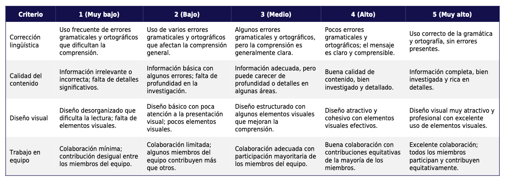

Rúbrica de evaluación del producto final (Guía turística digital)
Mediante la rúbrica se evalúa el uso adecuado del vocabulario y estructuras gramaticales trabajadas en clase; organización y coherencia del contenido; creatividad y diseño visual de la guía; integración de las herramientas digitales.
Se aplicará al final del proyecto, durante la presentación de la guía turística digital.
La rúbrica incluirá criterios claros y ponderados, como:
- Corrección lingüística (30%).
- Calidad del contenido investigado (25%).
- Diseño visual (25%).
- Trabajo en equipo reflejado en la presentación (20%).
Tratamiento de variables:
Diferentes niveles de competencia: Se valorará más el esfuerzo y la mejora en función del nivel inicial del grupo.
Problemas técnicos: Si surgen dificultades tecnológicas, se tendrá en cuenta la adaptación del grupo (ej., uso de recursos alternativos).
Los resultados de la rúbrica permitirán identificar fortalezas y áreas de mejora en la producción escrita y competencias digitales del alumnado. Además, se utilizará para dar feedback individualizado y grupal.
Más allá de la calificación, la rúbrica facilitará reflexionar sobre el éxito de las estrategias de enseñanza empleadas y proveerá información sobre el uso de herramientas digitales en el aula.
